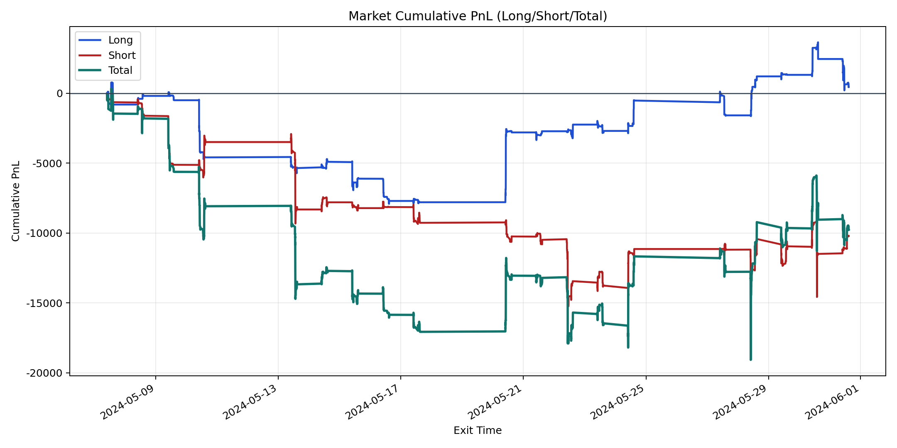
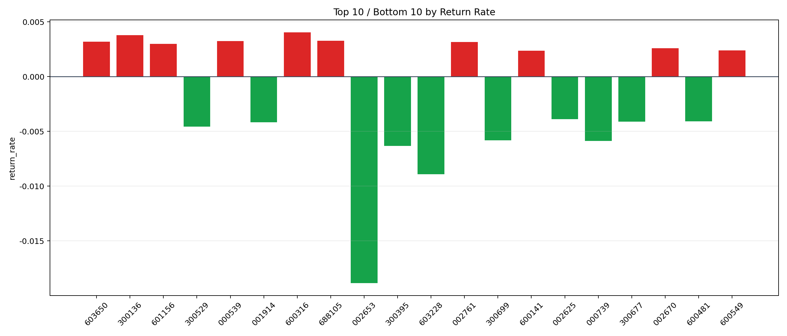

| repo_root | /home/haoranyou/data/output/alpha0.4_1w_5s_3ticks_index_filter/index_weights_500 |
|---|---|
| period_months | 1 |
| period_label | 2024-05-07_to_2024-05-31 |
| start_time | 2024-05-07 09:50:17 |
| end_time | 2024-05-31 14:44:12 |
| n_trades | 3923 |
| n_symbols | 93 |
| total_pnl | -9757.742600000092 |
| long_total_pnl | 452.9741999999628 |
| short_total_pnl | -10210.716800000055 |
| total_entry_notional | 36492044.0 |
| long_entry_notional | 16647586.0 |
| short_entry_notional | 19844458.0 |
| total_return_rate | -0.00026739369819898533 |
| long_return_rate | 2.7209602641485847e-05 |
| short_return_rate | -0.0005145374491961461 |
| top_symbols_by_return | ["600316", "300136", "688105", "000539", "603650", "002761", "601156", "002670", "600549", "600141"] |
| bottom_symbols_by_return | ["002653", "603228", "300395", "000739", "300699", "300529", "001914", "300677", "600481", "002625"] |

